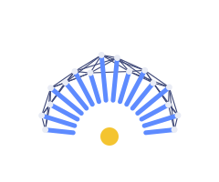

Enjambres
Rodrigo F. Cádiz (2026)
Síntesis por dinámica de enjambres (modelo de Vicsek), a partir de Huepe, Colasso y Cádiz (2014). Los agentes vuelan por el semicírculo y suenan en las laptops que tienen más cerca.
Pontificia Universidad Católica de Chile
Concierto de cierre 2026
Auditorio Luksic
Viernes 11 de diciembre · 19:00 h · Campus San Joaquín UC · entrada gratuita
Un proyecto Impacto UC de la Dirección de Artes y Cultura UC
Concierto
La Orquesta de Laptops UC cierra su año con un concierto público en el Auditorio Luksic. El programa reúne obras creadas por los integrantes y el director de la orquesta, y versiones para este ensamble de obras de otros autores. Cada obra trae su propio instrumento, programado por la orquesta, que corre en sus laptops.
Dos movimientos: una fanfarria del amanecer, a partir de Strauss, tocada con instrumentos invisibles, y un collage de música concreta. Todas las laptops parten juntas desde la laptop de la directora, conectadas en red.
Un relato hecho con motores eléctricos simulados en MotorSynth, el instrumento web del autor: zumbidos de 50 Hz, motores que aceleran, alarmas, sirenas y el pulso de un resonador magnético acompañan a una persona que no logra despertar, a través de una emergencia médica. Los intérpretes se coordinan de oído e improvisan dentro de cada sección.
Reinterpretación de «genesis» de Robin Callaway, entre el noise rock y el shoegaze. Teclados y ambientes se van sumando hasta construir la canción; la obra tiende un puente entre la orquesta de laptops y una canción de estructura popular.
Versión de dos temas de la banda sonora del videojuego ULTRAKILL. Con Keyboard Instruments, la app que el autor programó para la orquesta, cada laptop toca una parte con el teclado del computador: batería, guitarra, cello y otras.
Un pulso de house a 128 BPM repartido entre las laptops: kick, percusión, bajo, acordes y efectos. La obra parte ordenada, se desarma dando libertad a los intérpretes y vuelve a sincronizarse; el desfase del grupo pasa a ser parte de la forma.
Parte de una canción infantil de conteo regresivo, pero lo que se reduce es la frase: en cada sección se acorta, de 10 a 4 corcheas. Diez laptops con timbre de vibráfono, cada una con una nota fija, y un handpan que improvisa hasta unirse al ritmo del conjunto al final.
Síntesis por dinámica de enjambres, a partir del modelo de Vicsek y del método de Huepe, Colasso y Cádiz (2014). Una laptop maestra simula el enjambre; cada intérprete agrega, quita y silencia sus agentes, que vuelan por el semicírculo y suenan en las laptops más cercanas.
Programa en confirmación.
Impacto UC
La Orquesta de Laptops UC es un proyecto Impacto UC de la Dirección de Artes y Cultura de la Pontificia Universidad Católica de Chile.
La orquesta
La Orquesta de Laptops UC es el primer ensamble de su tipo en Chile. Sus integrantes no reproducen audio grabado: tocan instrumentos que ellos mismos programan, que sintetizan y transforman sonido en tiempo real y que se controlan con el teclado, el mouse, joysticks, Gametrak, controladores MIDI y otros dispositivos.
Como en una orquesta tradicional, el sonido sale de cada puesto: cada estación tiene su propia amplificación, de modo que la música se reparte en el espacio. Una red local propia conecta a todas las laptops, que pueden compartir reloj, partitura y parámetros desde una laptop maestra, sin depender de internet.
En 2026 la orquesta funciona como curso de la Universidad, IEE2003 Orquesta de Laptops UC, con estudiantes de Ingeniería y de Música. Durante el semestre sus integrantes aprenden síntesis y procesamiento de sonido, construyen sus instrumentos, arman la red del ensamble, montan repertorio y componen obras nuevas, documentadas en sus portafolios.
Dirige la orquesta Rodrigo F. Cádiz, profesor titular del Instituto de Música y del Departamento de Ingeniería Eléctrica UC.
Repertorio
Obras con que la orquesta trabaja este año. La lista completa se publicará junto con el programa del concierto.
Rodrigo F. Cádiz (2026)
Síntesis por dinámica de enjambres (modelo de Vicsek), a partir de Huepe, Colasso y Cádiz (2014). Los agentes vuelan por el semicírculo y suenan en las laptops que tienen más cerca.
Terry Feng, Soohyun Kim y Yikai Li (2023)
Fanfarria con instrumentos invisibles y un collage de música concreta. Montaje en red para la orquesta a cargo de Rocío Navas Nervi.
Integrantes 2026
Los estudiantes del curso desarrollan sus propias obras e instrumentos para la orquesta; los proyectos están en curso y se documentan en sus portafolios.

Director
Rodrigo F. Cádiz, compositor, profesor titular del Instituto de Música y del Departamento de Ingeniería Eléctrica UC.
Ayudante
Cristián Alvear
El programa completo del concierto del 11 de diciembre se publicará en esta página.
Participa
La orquesta se forma a través del curso IEE2003 Orquesta de Laptops UC, abierto a estudiantes de pre y postgrado de la UC. Estudiantes de Música pueden cursarlo como MUC865 Síntesis de Sonidos. Es un trabajo presencial y colectivo: se ensaya todas las semanas y el semestre termina en concierto.
Si te interesa la próxima versión, deja tus datos y te avisaremos de fechas, requisitos y horarios.
No es requisito. El primer mes del curso es de nivelación, y se trabaja con Max/MSP, Pure Data y ChucK. Ayuda tener alguna experiencia con síntesis o programación, pero se aprende en equipo.
No. La orquesta tiene laptops propias, configuradas para el ensamble y conectadas a su red.
No. La orquesta reúne a estudiantes de Ingeniería, Música y otras carreras.
Asistencia presencial a los ensayos y al concierto.
Referentes
El formato nació en orquestas como la Stanford Laptop Orchestra (SLOrk) y la Princeton Laptop Orchestra (PLOrk), y se cruza con el campo de las nuevas interfaces de expresión musical. Esta lista reúne ejemplos de otros ensambles del mundo.
Contacto
Para participar, colaborar, proponer una obra para la orquesta o cubrir el concierto: rcadiz@uc.cl